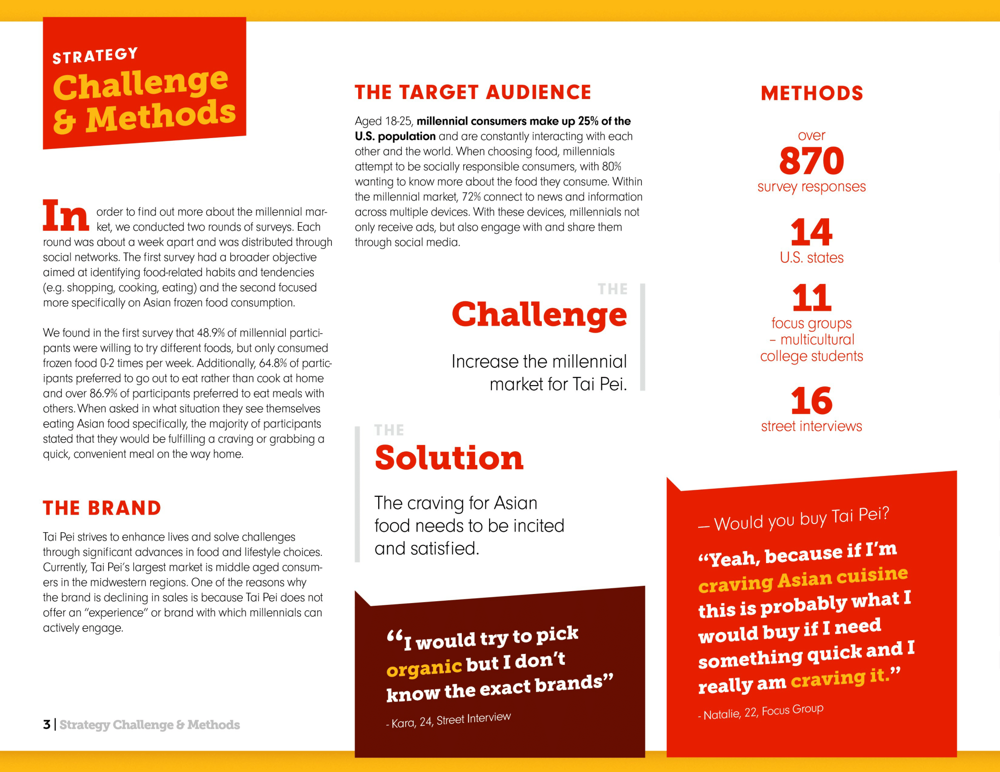
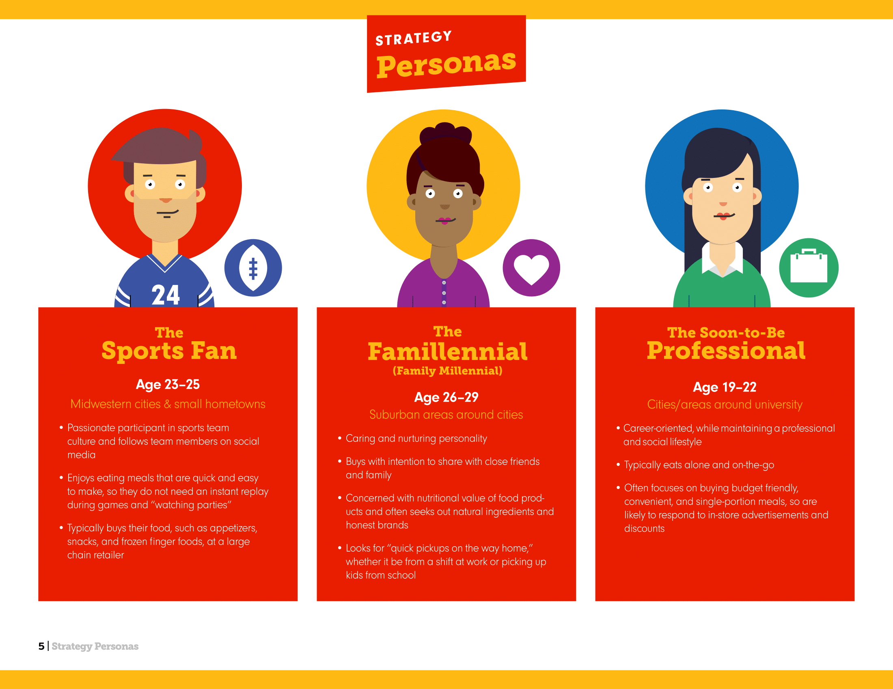

Overview
Professional Student Organization
Timeline: 2 years
Strategist
Skills: Needfinding, Survey, Interviewing, competitive analysis
Background
We are a student organization on UCSD campus that participates in National Student Advertising Compeition every year.
Adwave is a team focused on marketing, advertising, and business consulting. For the 2016 National Student Advertising Competition we were faced with a challenge of putting Ajinomoto Windsor’s Taipei Frozen food on the forefront of millennials frozen meal choices.
Starting with researching the competitive landscape we found that Taipei’s main competitors to be Amy’s Kitchen and Hot Pockets. Amy’s Kitchen promotes healthy, clean choices whereas Hot Pockets conveys a casual, playful comfort food snack, these two brands have clear offerings to distinguish themselves from other competitors. We plan to position Taipei as the “go-to” asian meal of choice for millennials
With competitors in mind we created surveys as well as held focus groups and taste tests to see how millenials react to Taipei and the frozen food market. We found that millennials are mindful consumers, they don’t just eat to live, they live to eat. Realizing millennials’ scenarios for eating Taipei’s asian frozen food are all surrounding their cravings for distinct flavors, Taipei’s wide variety of unique flavors will spearhead the campaign and fill the cravings of the frozen food market.
We crated three strategy personas to target millenials
With our strategy built around millennials’ unsatisfied asian food cravings our campaign is able to build on how to connect with our audience and help conquer and indulge in Taipei’s specials.
Experience
- Learned the basics of advertising
- Experience with working as a large team with multiple sub teams.
- Conducted qualitative and quantitative research
- Extract valuable information from secondary and primary research